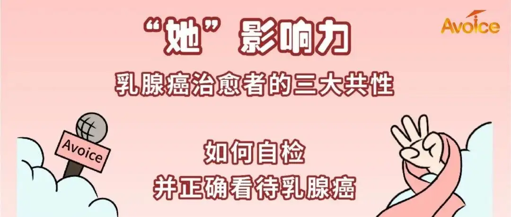

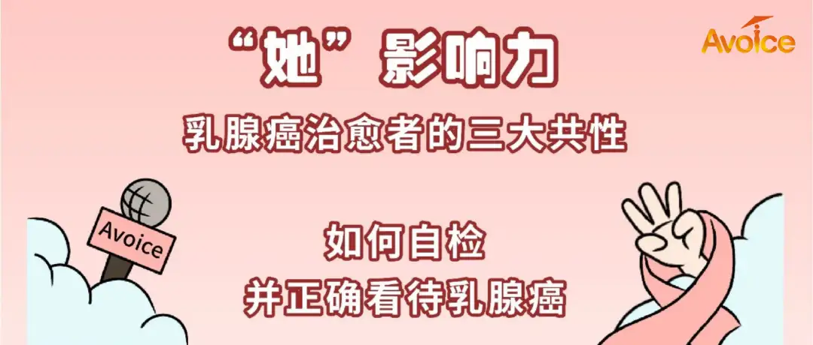

那时我对癌症知之甚少，让我恐惧的并非癌症本身。我的恐惧来自搜索引擎。我害怕当我输入“胸部肿块”时弹出的内容，害怕流动在博客和论坛之间的疾病文化，害怕被动变为病人的过程。—安妮·博耶《未死之身》
大多数女性不会主动搜索乳腺癌的消息，除非她们患有乳腺癌或周围有相关亲友患病。然而，我们不得不正视这个疾病可能带来的风险。
据估计，2020年全球女性乳腺癌新增发病人数为2261419例，占全球女性恶性肿瘤发病的25.84%，占全球恶性肿瘤发病的12.50%。
对于乳房疾病，尽早自查与防治是唯一且最有效的规避手段。在今天这个与女性权益息息相关的日子里，Avoice希望能够给各位读者带来一些简洁明快的乳腺癌科普，从自我检查到规范治疗的相关知识，悉心呵护女性健康。
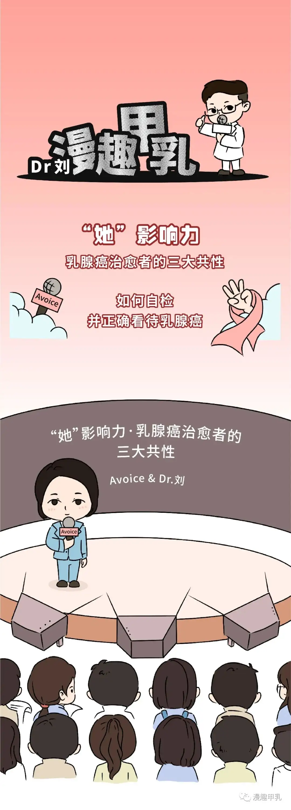
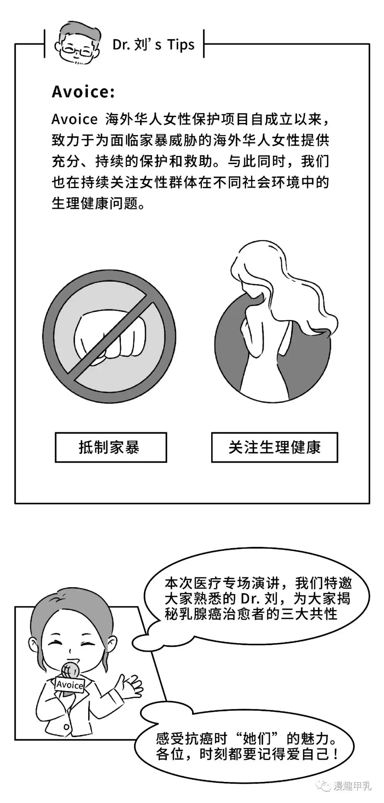
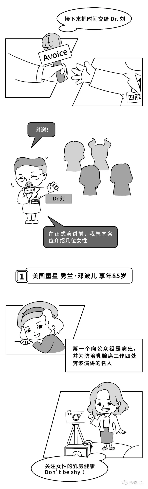
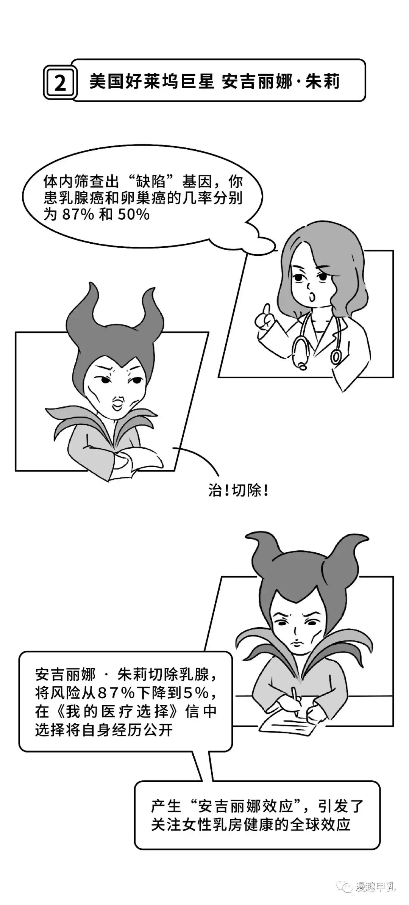
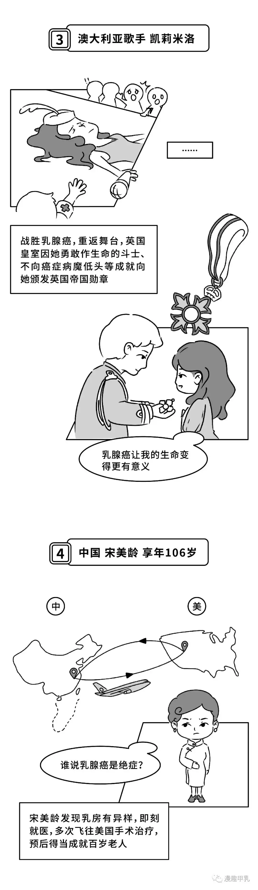
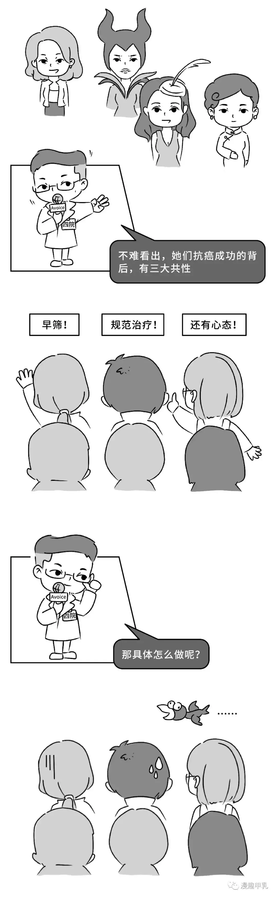
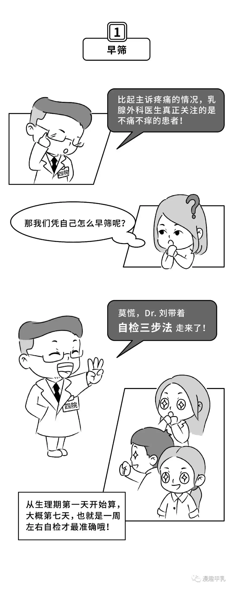
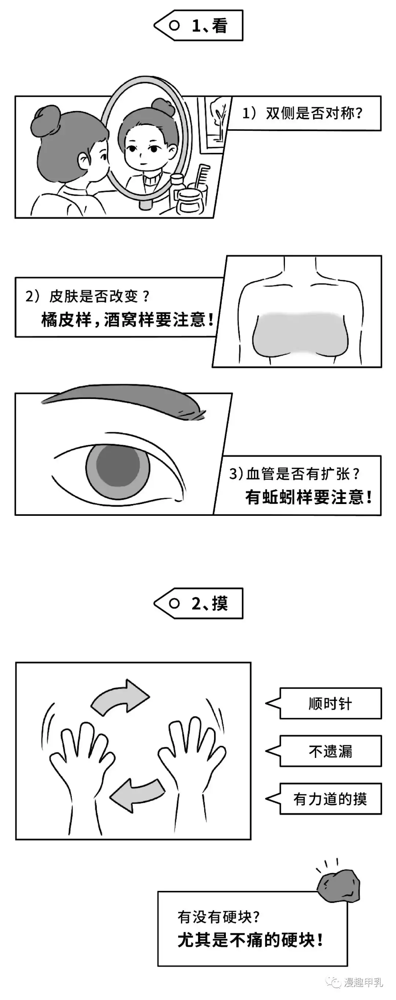
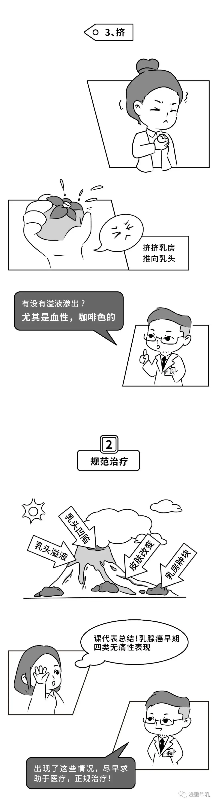
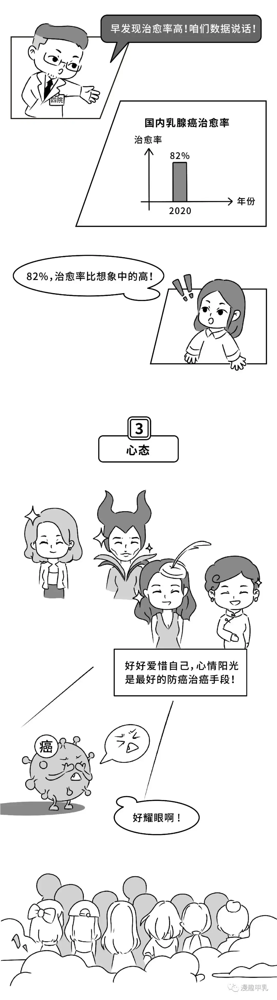
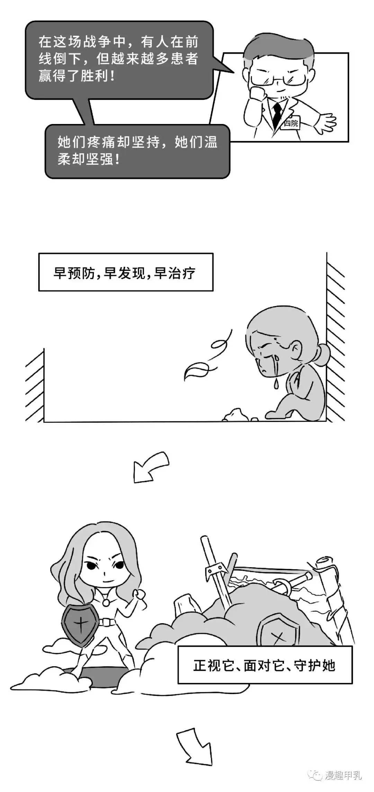
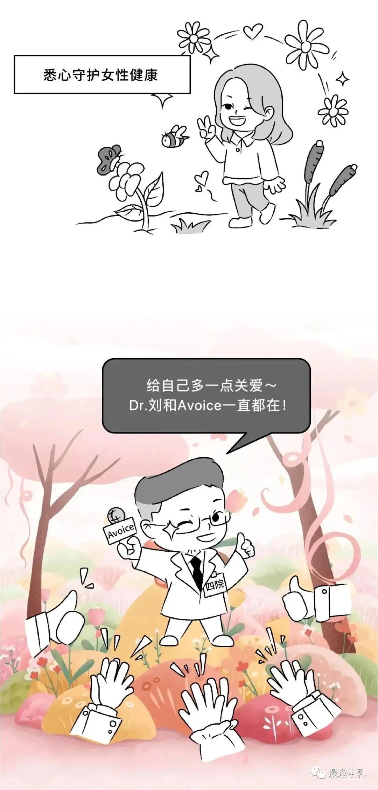
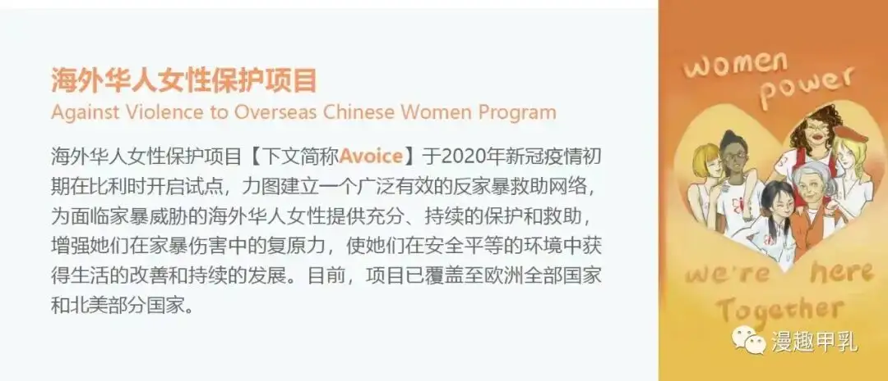
免责声明：本文漫画内容由“漫趣甲乳”提供，仅作信息交流之目的，文中观点不代表Avoice立场，亦不代表Avoice支持或反对文中观点。本文也不是治疗方案推荐。如需获得治疗方案指导，请前往正规医院就诊。
往期内容：2022年中国癌症报告----甲乳恶性肿瘤预后较好